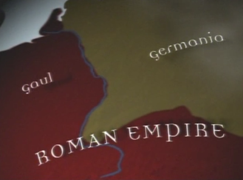

Arminius
Roma Imparatorlugu'nun "barbar" Germenlerin yasam alanlarina dogru uzanmasina en buyuk darbeyi vuran kisi budur: Arminius.Latince isminden Romali oldugu dusunulebilir, bu gercege yakindir. Arminius Romalilar tarafindan savas sirasinda esir alinmis, daha sonra Romalilar tarafindan "egitilerek", "medenislestirilmis" Germenik soylulardan biriydi [2]. Romanize edilmisti (daha dogrusu oyle oldugu zannedilmisti) ve Latince ismini Roma'da yasadigi sirada edinmisti. Arminius Roma'da uzun bir sure yasadi, Macaristan'a yapilan bir sefere de katilip, "Sir" unvaninin esdegerini Roma'da elde edecek kadar sistem icinde yukseldi.Germenik sinir bolgesindeki vali Varus emrinde eski ulkesinde gorev yapmaya basladi. Fakat Arminius, Varus'un anavatanina donuk tavrini begenmedi, vali, Germen millete kole gibi bakiyordu, vergi talepleri vardi, ve Roma'nin doguya / kuzeye dogru yayilma emelleri belliydi. Germen kavminin merkezi bir yoneticisi yoktur, daginik bir yapida yasamaktadirlar, ve kulturel yapilari disaridan birinin kontrolune gecmeye musait degildir.Bunlari bilen Arminius Germenik bolgelere yapilacak saldiriyi anavatanindaki savas seflerine bildirmeye karar verdi, ve ayni anda karsi tarafta da bir direnis orgutledi. Romali askerlerin nereden saldiracagi hakkinda taktik danismanlik yapan da kendisiydi. Boylece Romalilar tuzaga dusuruldu -- 20,000 kisilik ordu yenilgiye ugratildi.
Bu yenilgi sonrasinda Roma Germenik bolgelere dogru yayilmayi durdurdu, ve imparatorluk Ren Nehri gerisine cekildi -- Ren uzun sure dogal bir sinir gorevini gormustur.Zaferin ardindan Arminius Germenlerin basina gecip tek kral olmaya yeltenince, bu sefer kendisi bir suikasta kurban gitti.Ilgili yazilar: Avrupa'nin Kulturel Fay Hatti, Barbarlar---[1] Terry Jones' Barbarians[2] Uygulanan bir tur "devsirme" politikasidir -- Roma sinirlari ve otesindeki topluluklarin soylularini Romalilastirarak onlar uzerinden etkisini genisletecegini dusunuyordu.[3] "Merkezi liderlerden hosnut olmayan Germenler, nasil olup ta Hitler fasizmini kabul edebilmistir" diye bir soru akla gelebilir: Modern / endustriyel cagda merkezilesme dogal olarak her ulus-devlet icinde kuvvetlendi (uretim sekli sosyal yapiyi etkiler). Fakat sunu da bilmek gerekir: Hitler iki savas arasi ekonomik buhran ve derin sosyal cokuntulerin yasandigi bir sirada basa geldi ve yonetimi suresince 17 suikast tesebbusune maruz kaldi. Ortacag'da cok kuvvetli olan eski Hansaetic Lig uyesi sehirlerin zaten "Romaci" Hitlerle arasi iyi degildi; Hitler bu bolgedeki Lubeck sehrinde konusma yapmak istediginde net bir "hayir" cevabi almistir.[4]
Almanya'nin bugunku yonetim yapisi o kadim daginik yapisini yansitir. Sistemi inceleyenler daginik yetkilerin, bir suru kontrolun, kontrollerin kontrollerinin oldugu karisik / acaip yapiyi gorunce, nasil olup ta bu insanlarin icraat yapabildigine sasiyorlar. Incelemeye deger bir konu aslinda.
